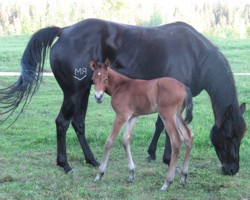
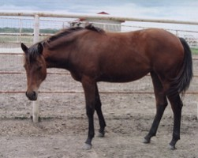
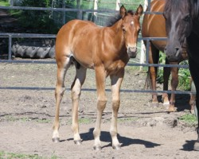

Sale Horses
Please call Daryle at 780-542-6568 or email at ddschmid@telus.net for more information on the sale horses.Tequilla Mockingbird
2001 AQHA Black Mare
Click Here to view Pedigree and more information
Wright N Tag Chex
2005 AQHA Bay Mare
7 year old mare very quite disposition and very athletic. Natural stopper
Click Here to view Pedigree and more information
Wright Me Five Chexs
2007 AQHA Bay Stallion
Bred for Performance. This gelding's pedigree speaks for itself.
5 year old 15.2 HH Bay Gelding, no white on legsClick Here to view Pedigree and more information